1
京都
出町座
上映期間11.13（金）〜11.19（木）
監督来場・トーク11.13（金）
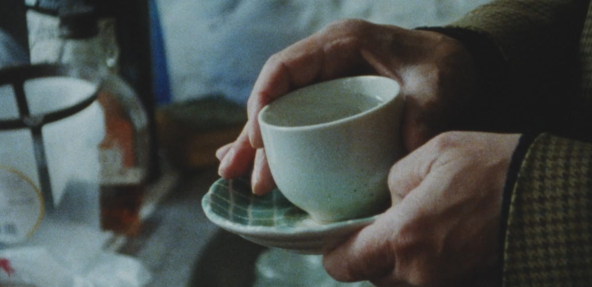
ベルギーの伝説的映画監督ボリス・レーマンが、御年８２歳にして初来日。これに伴い、京都・東京の４会場でレーマン監督をお招きし上映会を実施。レーマン監督が手がけた６００本超の作品の中から厳選した作品を上映します。
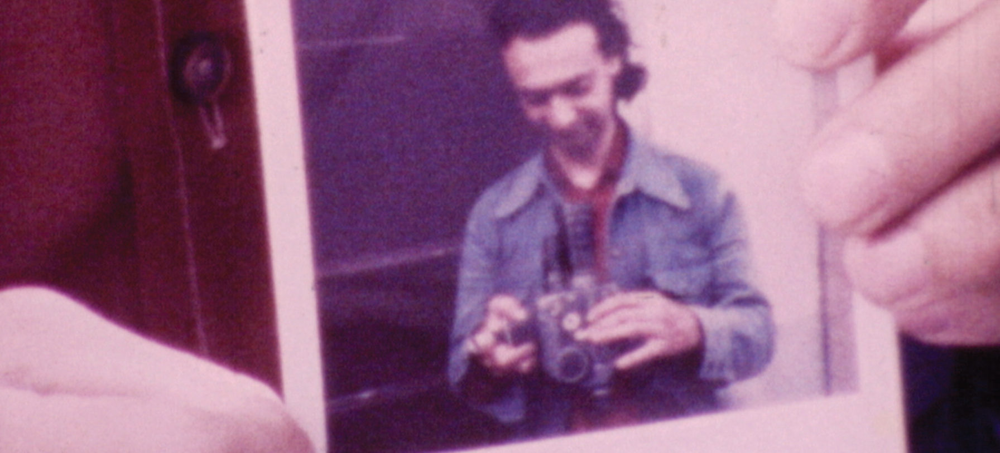
君の映画は映画詩の宝だ。
ありがとう、ボリス！
―ジョナス・メカス
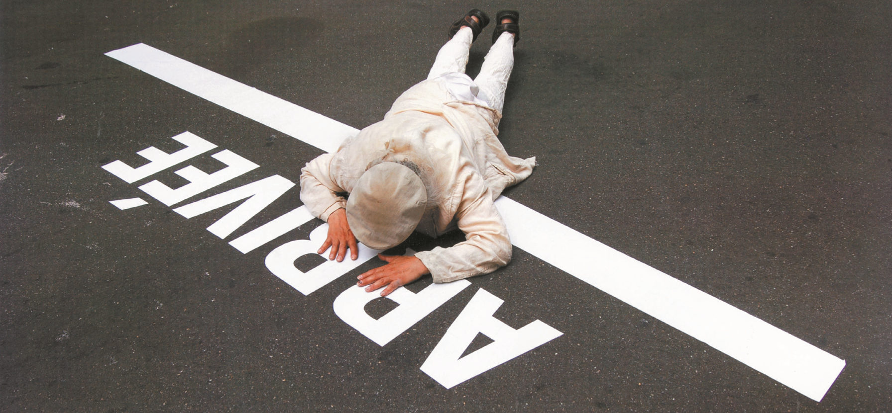
主催：シエラアスール
共催：大阪大学大学院人文学研究科芸術学専攻
アート・メディア論コース
協力：ベルギー王立シネマテーク
シネマテーク・ド・トゥールーズ
イタリア国立ホームムービー・アーカイブ
ジャスティン・マッケンジー・ピアーズ
ボリス・レーマン監督レトロスペクティブ
ベルギーの伝説的映画監督、御年82にして初来日
JAPAN TOUR 2026シャンタル・アケルマンの古い友人であり、『ジャンヌ・ディエルマン』の撮影現場にスチールカメラマンとして参加したレーマン監督は、以降、商業映画とは一線を画し、50年間独自の映画を制作し続けました。その600本超の作品から厳選した9作品を、京都・東京の4会場で上映。監督本人が各会場を巡回し、上映にあわせてトークを行います。
ボリス、君の映画『私の七つの場所』は素晴らしい、素晴らしい！ そう、人生と映画の驚異に満ちている。僕たちはふたりとも、自分自身のこと、自分の人生、友人たちの人生を映画にしている――でも、なんと驚くほど違うやり方で！ 君が目を向けるのは、僕たちが普段まったく気にも留めないもの――ドアの鍵、果物屋に届く段ボール箱、古びてすり切れた靴、ジャケットを一枚買うこと、税金の煩わしい手続き……そういったものへの君の瞑想に、僕はすっかり心を奪われた。そして、閉館していく映画館、引き払われていくアパート、旧友との再会、公園で忘れられた孤独なベンチに寄り添うこと――それはすべて、人生の詩だ。過ぎ去った日々の、生きられた時間の詩。そしてそのすべてが、人生への愛と映画への愛によって作られている。昨日君がくれた五時間は、稀有で、特別な映画の時間だった。大切にしたい。君の映画は映画詩の宝だ。ありがとう、ボリス！
――ジョナス・メカス（『私の七つの場所』に寄せて）
＊各会場の上映作品・時間・料金は、会場詳細および各会場のウェブサイトでご確認ください。
ベルギーの伝説的映画監督ボリス・レーマンが、御年82にして初来日します。1960年代から半世紀以上にわたってカメラを回し続け、スーパー8、16ミリ、ビデオで多数の作品を生み出してきたレーマン監督は、自らの日常や友人たちとの出会いを撮り、そして撮られることで、「人生を映画に、映画を人生に」変えてきた作家です。
本特集では、ブリュッセルの街と人々を記録した初期の大作『マグヌム・ベギナジウム・ブリュクセレンセ』から、自伝的連作『バベル』の代表作『私の七つの場所』、自らの葬儀を演じる最終章『葬儀』まで、厳選した9作品を京都・東京の4会場で上映。監督本人が各会場を巡り、上映にあわせてトークを行います。日本ではほとんど紹介されてこなかった、その豊かな映画世界に触れるまたとない機会です。
1944年スイス・ローザンヌ生まれ、ベルギーの実験映画作家。ピアノを学んだのち写真と映画に惹かれ、ブリュッセルの国立高等芸術学院で映画を学ぶ。映画批評を書くかたわら、1965年から83年まで精神障害者のデイケアセンターに勤務し、患者たちとの映画制作を通じてシネマを治療の道具として用いた。シャンタル・アケルマン、アンリ・ストルクらの作品に助手・俳優として参加。約600本の映像作品を制作し、60万枚の写真を撮影している。ジョナス・メカスと同様に映画を日常に根ざした芸術として捉え、1983年から2021年にかけて全9部・総尺25〜30時間の自伝的連作『バベル』を制作。一度きりの上映のために編集された作品も多い。
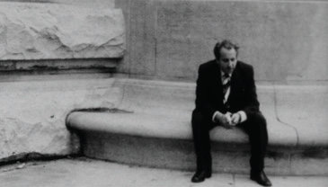
閉所恐怖症を患ったユダヤ人の男が、アパートの一室で大戦時の潜伏生活を再現する。12歳という役柄ながら、その語りには37年前の実体験と今が色濃く反映される。精神障害者デイケアセンターの活動「クラブ・アントナン・アルトー」から生まれた作品で、セルジュ・ダネーによってカイエ週間に選出された一本。
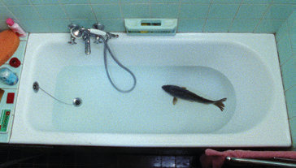
鯉が水揚げされ、伝統料理ゲフィルテ・フィッシュとして食卓に並ぶまでの旅路を追った作品。現代のユダヤ人を巡る様々なイメージが交差する。
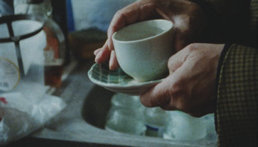
カメラを向けられたボリスがあらゆる物の名前と元の所有者を述べていく。ジャック・プレヴェールや清少納言の『枕草子』に触発されて撮られ、人の生の厚みを見事に表現した短編。
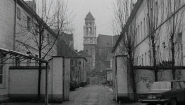
ブリュッセルのベギン会地区を舞台に、約150人の住民の日常を夜明けから深夜まで追った大作。三十あまりの断章がパズルのように組み合わさる百科事典的な構造のなかで、消えゆく街と、人々のささやかな身振りが淡々と記録されていく。
「私たちの記憶のようなものだ」――シャンタル・アケルマン
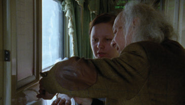
『Histoire de mes cheveux』（2010）の続編。強制収容所からの「架空の脱走」によって幕を開ける、私的かつ壮大なロードムービー。シベリアの広大な雪景色の中を自らのルーツを求めて彷徨い、ユダヤ人自治州ビロビジャンへと辿り着く。日記映画のひとつの到達点。
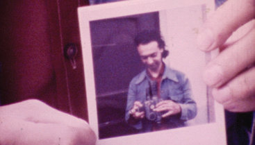
1974年、既にプロの映画作家であったボリスは、スーパー8の映画祭からの依頼を受け、規定でアマチュアに禁じられていたホームムービーをあえて撮影する。「自分が撮り、そして自分が撮られる」という、ボリス独自の対話と交換の手法が生まれた作品であり、当時から物への目配りといった芸術的探求が見てとれる。上映は生演奏と朗読つき。
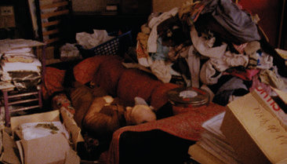
九部作『バベル』の第四章であり、代表作。1999年から2010年にわたり、住居を転々とするボリスの、移動距離30万キロにおよぶ旅が、ドキュメンタリーの断片、日記、覚書、フィクションの切れ端で編まれていくモザイク状の自伝的大作。「ただ単に存在しようとする試み」（ボリス）が結実した、人生そのものと呼ぶべき映画。
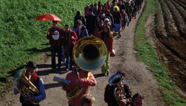
1983年から続いてきた連作『バベル』の最終章であり、自らの死と映画の終わりを壮大なユーモアと愛を込めて演じ切る自伝的試み。棺選びや遺品の焼却、友人たちと行進する陽気な葬列や埋葬の儀式を通じて、多数の映画を制作してきた自らのシネマを全うしていく。「存在すること」から「消滅すること（不可視）」へ、死すらも対話と戯れの舞台へと昇華させながら、自らを永遠のノマドへと解放した壮絶なる遺言的一本。
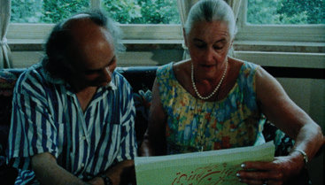
イランで14年間暮らし、ペルシアの民話を集めて翻訳してきた77歳の女性アドリアンヌに贈る、愛に満ちたポートレート。「自分が撮り、自分が撮られる」というボリス独自の視点はそのままに、水泳、運転、料理、縫製、そして映画撮影といった7つの「レッスン」と寄り道を軽やかに重ね合わせていく。彼女の生き様そのものがペルシアの童話のように響き合い、伝統的な語りと映画という記憶の継承が見事に交差する、温かい幸福感に満ちた一作。